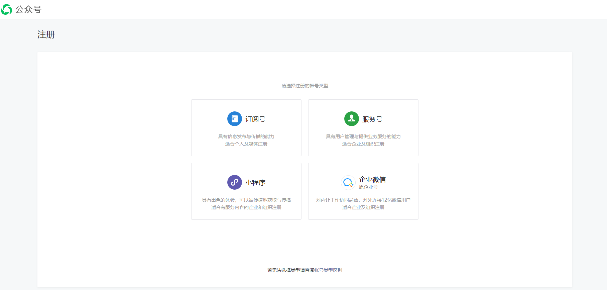
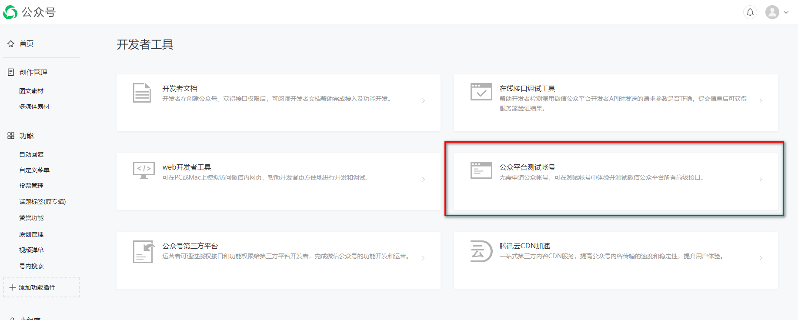
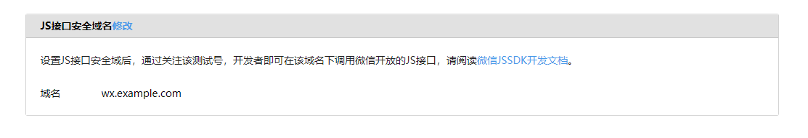
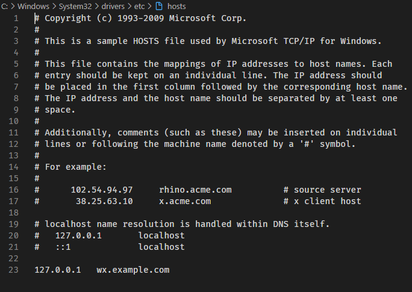
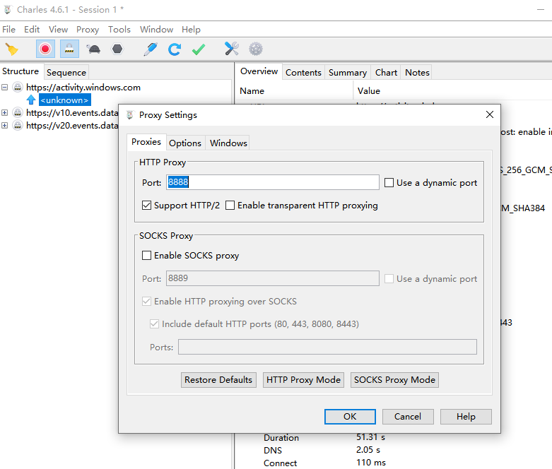

微信JS-SDK接入
最近项目里遇到需要手机端H5使用扫码的需求，解决方法是使用微信的JSSDK调用微信扫一扫接入。微信调用扫一扫需要通过调用wx.config方法注入权限验证配置。下面说明如果获取JSSDK的权限。
申请微信公众号
在微信公众号的注册页面申请注册，由于是个人开发测试接口，选择订阅号就行。

注册完成之后在开发–开发者工具页面选择 公众平台测试账号

里面有测试的appId和appSecret, 配置安全域名，本地开发时如何配置虚假域名后面说明。

配置虚假域名（windos）
修改c:/Windows/System32/drivers/etc/hosts文件,把127.0.0.1改成自己定义的域名。

下载代理软件Charles, 配置代理端口，以8888为例。

确保手机和电脑连接在统一局域网内，修改手机WiFi的代理配置，地址改成电脑的局域网ip地址，端口为代理软件配置的地址。
手机通过配置的域名访问前端开发页面。
后端生成signature
看下微信的wx.config接口
1
2
3
4
5
6
7
8
| wx.config({
debug: true,
appId: '',
timestamp: ,
nonceStr: '',
signature: '',
jsApiList: []
});
|
wx.config接口需要signature这是需要通过jsapi_ticket经过hash之后生成的，所以需要后端提供一个生成signature的接口。
后端获取公众号的access_token，微信官方文档。
- 通过GET请求接口
https://api.weixin.qq.com/cgi-bin/token?grant_type=client_credential&appid=APPID&secret=APPSECRET，拿到返回的access_token1
| {"access_token":"ACCESS_TOKEN","expires_in":7200}
|
- 通过GET请求：
https://api.weixin.qq.com/cgi-bin/ticket/getticket?access_token=ACCESS_TOKEN&type=jsapi，拿到返回的ticket:1
2
3
4
5
6
| {
"errcode":0,
"errmsg":"ok",
"ticket":"bxLdikRXVbTPdHSM05e5u5sUoXNKd8-41ZO3MhKoyN5OfkWITDGgnr2fwJ0m9E8NYzWKVZvdVtaUgWvsdshFKA",
"expires_in":7200
}
|
- 对noncestr， timestamp, jsapi_ticket, url四个值做sha1哈希，微信需要按字段名排序后拼接成字符串，就是js代码写就是：
1
| var str = `jsapi_ticket=${ticket}&noncestr=${noncestr}×tamp=${ts}&url=${url}`;
|
整个生成signature的nodejs代码如下：
1
2
3
4
5
6
7
8
9
10
11
12
13
14
15
16
17
18
19
20
21
22
23
24
25
26
27
28
29
30
31
32
33
34
35
36
37
38
39
40
41
42
43
44
45
46
47
48
49
50
51
52
53
54
55
56
57
58
59
60
61
62
63
64
65
66
67
68
69
70
71
72
73
74
75
76
77
78
79
80
|
const request = require('request');
const cors = require('cors')
const express = require('express')
const crypto = require('crypto');
const bodyParser = require('body-parser');
const app = express()
const port = 3000
app.use(cors());
app.use(bodyParser.json());
app.get('/', (req, res) => {
res.send('Hello World!')
})
const appId = '申请的公众号的appId'
const appSecret = '申请的公众号的appSecret';
const createNonceStr = () => Math.random().toString(36).substr(2, 15);
const createTimeStamp = () => parseInt(new Date().getTime() / 1000) + '';
const calcSignature = function (ticket, noncestr, ts, url) {
const str = `jsapi_ticket=${ticket}&noncestr=${noncestr}×tamp=${ts}&url=${url}`;
return crypto.createHash('sha1').update(str).digest('hex')
}
app.post('/getWX', function (req, res) {
const url = req.body.url;
let promise = new Promise((resolve, reject) => {
request(`https://api.weixin.qq.com/cgi-bin/token?grant_type=client_credential&appid=${appId}&secret=${appSecret}`, function (error, response, body) {
if (!error && response.statusCode == 200) {
let access_token = JSON.parse(body).access_token;
console.log('第一步获取access_token：', access_token);
resolve(access_token);
} else {
reject(error);
}
});
});
promise.then(access_token => {
return new Promise((resolve, reject) => {
request(`https://api.weixin.qq.com/cgi-bin/ticket/getticket?access_token=${access_token}&type=jsapi`, function (error, response, body) {
if (!error && response.statusCode == 200) {
let ticket = JSON.parse(body).ticket;
console.log('第二步获取ticket：',ticket);
resolve(ticket);
} else {
reject(error);
}
});
});
}).then(ticket => {
const noncestr = createNonceStr();
const timestamp = createTimeStamp();
const signature = calcSignature(ticket, noncestr, timestamp, url);
const wxConfig = {
appId: appId,
noncestr: noncestr,
timestamp: timestamp,
signature: signature,
}
console.log({ ...wxConfig, url });
res.send(wxConfig);
}).catch(error =>{
console.log(error);
});
});
app.listen(port, () => {
console.log(`Example app listening at http://localhost:${port}`)
})
|